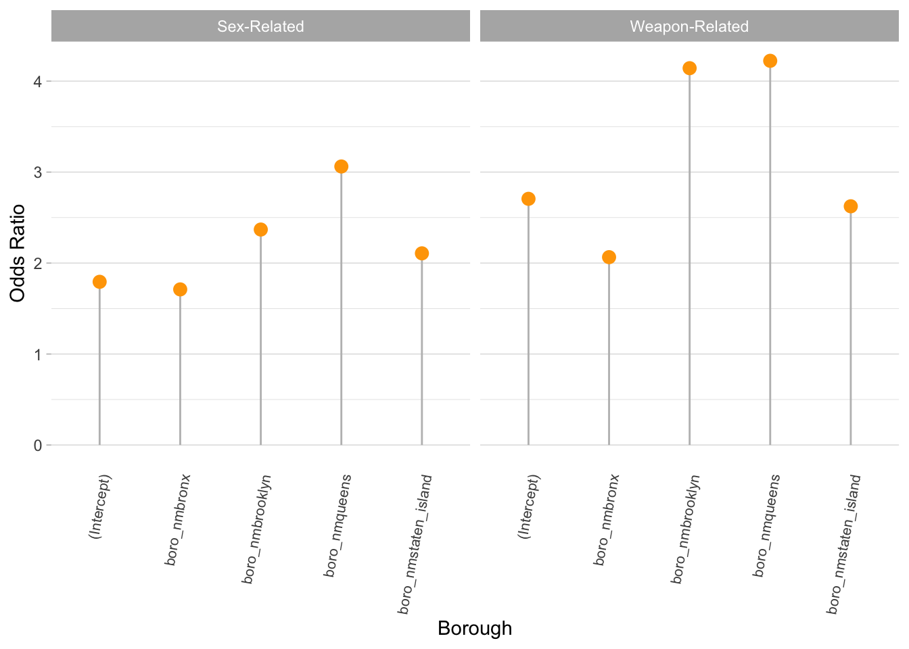

For our formal statistical analysis, we wanted to examine the association between sex-related, drug-related, and weapons-related felonies and boroughs. We chose to look at this because the exploratory analyses suggested that the rates of these felonies differed, depending on the borough. Although we could not adjust for the different standard of living by borough, we adjusted for income.
ln(P(crimegroup = drug related)/P(crime group = sex related)) = β_10 + β_11(Bronx) + β_12(Brooklyn) + β_13(Queens) + β_14(Staten_Island)
ln(P(crimegroup = weapon related)/P(crime group = sex related)) = β_20 + β_21(Bronx) + β_22(Brooklyn) + β_23(Queens) + β_24(Staten_Island)
In order to run an analysis, we first create our reference groups. We made drug-related felonies as the reference group among the 3 types of felonies and we made Manhattan the reference borough.
We create a data table to organize the rates of drug-related, sex-related, and weapons-related felonies.
| Drug-Related | Sex-Related | Weapon-Related | |
|---|---|---|---|
| manhattan | 3566 | 2084 | 3550 |
| bronx | 6312 | 1980 | 4556 |
| brooklyn | 5144 | 2592 | 7278 |
| queens | 2589 | 1693 | 3713 |
| staten_island | 682 | 297 | 655 |
| y.level | term | estimate | std.error | statistic | p.value | OR |
|---|---|---|---|---|---|---|
| Sex-Related | (Intercept) | 0.5844049 | 0.0275731 | -19.4813700 | 0.0000000 | 1.793923 |
| Sex-Related | boro_nmbronx | 0.5367635 | 0.0377326 | -16.4896410 | 0.0000000 | 1.710462 |
| Sex-Related | boro_nmbrooklyn | 0.8622320 | 0.0366125 | -4.0486419 | 0.0000515 | 2.368441 |
| Sex-Related | boro_nmqueens | 1.1189544 | 0.0416796 | 2.6966344 | 0.0070044 | 3.061651 |
| Sex-Related | boro_nmstaten_island | 0.7451797 | 0.0747898 | -3.9327525 | 0.0000840 | 2.106820 |
| Weapon-Related | (Intercept) | 0.9955120 | 0.0237090 | -0.1897204 | 0.8495282 | 2.706110 |
| Weapon-Related | boro_nmbronx | 0.7250480 | 0.0306600 | -10.4865465 | 0.0000000 | 2.064830 |
| Weapon-Related | boro_nmbrooklyn | 1.4212297 | 0.0298985 | 11.7572104 | 0.0000000 | 4.142211 |
| Weapon-Related | boro_nmqueens | 1.4406084 | 0.0348954 | 10.4617057 | 0.0000000 | 4.223264 |
| Weapon-Related | boro_nmstaten_island | 0.9647314 | 0.0596248 | -0.6021913 | 0.5470468 | 2.624083 |

The odds of sex-related crimes in manhattan is 1.79. The odds of sex related vs. drug-related crimes will increase by 1.71 if moving from Manhattan to Bronx. The odds of sex related vs. drug-related crimes will increase by 2.3684 if moving from Manhattan to Brooklyn. The odds of sex related vs. drug-related crimes will increase by 3.06 if moving from Manhattan to Queens. The odds of sex related vs. drug-related crimes will increase by 2.106 if moving from Manhattan to Staten Island.
The odds of weapon related crimes in manhattan is 2.7.
The odds of weapon related vs. drug related crimes will increase by 2.064 if moving from Manhattan to Bronx. The odds of weapon related vs drug related crimes will increase by 4.14 if moving from Manhattan to Brooklyn. The odds of weapon related vs drug related crimes will increase by 4.22 if moving from Manhattan to Queens. The odds of weapon related vs drug related crimes will increase by 2.62 if moving from Manhattan to Staten Island.